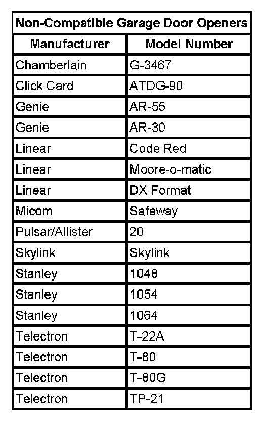

Garage Door Opener Programming - Universal
GARAGE DOOR OPENER PROGRAMMING - UNIVERSAL
GARAGE DOOR OPENER PROGRAMMING
IMPORTANT: Do not use the garage door opener (GDO) with any garage door opener that does not have the stop and reverse safety feature. This includes any garage door opener model manufactured before April 1, 1982.
Be sure that people and objects are clear of the garage door you are programming.
The GDO is programmed by using the customer's hand-held transmitter(s).
Turn the ignition OFF while programming the GDO transmitter. Follow these steps to program up to 3 channels:
1. If you have previously programmed a transmitter, proceed to Step 2. Otherwise, hold down the 2 outside buttons on the GDO transmitter for approximately 20 seconds, until the light on the GDO transmitter begins to flash rapidly. Then release the buttons. This procedure erases any previous settings and initializes the memory for all 3 channels.
2. Decide which of the 3 channels you want to program to the transmitter you have.
3. Hold the end of the hand-held transmitter against the front surface of the GDO (less than 1 inch) so you can still see the light.
4. Using both hands, press the hand-held transmitter button and the desired button on the GDO transmitter. Continue to hold both buttons through Step 5.
5. IMPORTANT: The GDO is compatible with most, but not all, types and brands of transmitters. If the GDO light does not flash rapidly after 90 seconds, there may be a compatibility conflict with the transmitter used to program the GDO. Call HomeLink(TM) at 1-800-355-3515 in order to address this problem.
Hold down the buttons on both transmitters until you see the light on the GDO transmitter flash slowly and then rapidly. The rapid flashing, which could take up to 90 seconds, indicates that the GDO transmitter has been programmed. Release the buttons on both transmitters when the light starts to flash rapidly.
TRAINING THE GDO FOR ROLLING CODE RECEIVERS
This procedure is for training the customer's rolling code garage door openers to their GDO transmitter. The GDO must already be programmed to its hand-held transmitter. The training process below must be completed within 30 seconds or it must be repeated.
1. Locate the train button on the garage door opener receiver.
2. Return to the GDO transmitter in the vehicle, and press the button that you want trained for rolling codes 3 times, for 1 second each time. If not successfully programmed, try 2-5 seconds each time.
3. Press the button used again in order to verify that the GDO transmitter has been programmed.
You may use either the hand-held transmitter or the GDO to open the garage door.
The GDO is compatible with most, but not all, types and brands of transmitters. If the GDO light does not flash rapidly after 90 seconds, there may be a compatibility conflict with the transmitter used to program the GDO. Call HomeLink(TM) at 1-800-355-3515 in order to address compatibility concerns.
ERASING CHANNELS

To erase programmed channels, hold down the 2 outside buttons until the light on the GDO transmitter begins to flash. Individual channels cannot be erased, but can be reprogrammed using the Garage Door Opener Programming and the Training GDO for Rolling Code Receivers procedures.